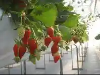
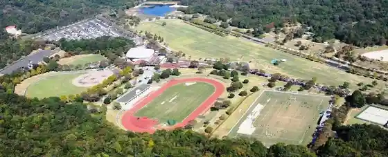
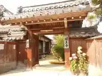

Enkoji
Yasu, Shiga · 077-587-0172 · Official / source link
Ichigo & Buruberii Sono Feriiche
Yasu, Shiga · 077-589-5917 · Official / source link

Yasu Sogo Gym
Yasu, Shiga · Official / source link
Shigaken Kibogaoka Bunka Park Supotsu Hall
Yasu, Shiga · 077-522-8369 · Official / source link

Gio Tera
Yasu, Shiga · Official / source link

Ozasa Hara Shrine
Yasu, Shiga · Official / source link
Sakura Nama Shiseki Park
Yasu, Shiga · Official / source link
Bijinesu Hotel Takara
Yasu, Shiga · Official / source link
TOYOTA SHARE Sentoraru Hotel Yasu
Yasu, Shiga · 0800-666-2077 · Official / source link
Heike Shuen no Chi
Yasu, Shiga · Official / source link
Maiami Hama Oto Campground
Yasu, Shiga · 077-589-5725 · Official / source link
Yasu Bunka Horu
Yasu, Shiga · 077-587-1950 · Official / source link
Biwakomaiami Land (Maiami Hama)
Yasu, Shiga · 077-589-4254 · Official / source link
Shiga Prefectural Omi Fuji Karoku Park
Yasu, Shiga · 077-586-1930 · Official / source link
Japan Bass Fishing Agent
Yasu, Shiga · 090-7695-2674 · Official / source link
Mikami Yama
Yasu, Shiga · Official / source link
Okami Shrine
Yasu, Shiga · 077-587-0383 · Official / source link
Kinsho Kanroku Yukari no Ie
Yasu, Shiga · 077-589-2007 · Official / source link
JR Yasu Eki
Yasu, Shiga · 0570-00-2486 · Official / source link
Dotaku Museum (Yasu Rekishi Minzoku Museum)
Yasu, Shiga · 077-587-4410 · Official / source link
Rencho Tera
Yasu, Shiga · 077-589-2865 · Official / source link
Nishikiori Tera
Yasu, Shiga · 077-589-2648 · Official / source link
Sakura Ryokuchi
Yasu, Shiga · Official / source link
Bussho Tera
Yasu, Shiga · 077-589-2414 · Official / source link
Hei Shu Taisha
Yasu, Shiga · 077-589-2072 · Official / source link
Somuku Rabe Jizo
Yasu, Shiga · 077-588-3185 · Official / source link
Fukubayashi Jiseki Magai Hotoke
Yasu, Shiga · Official / source link
Mentai Park Biwa Mizumi
Yasu, Shiga · Official / source link
Yasu Yakusho
Yasu, Shiga · 077-587-1121 · Official / source link